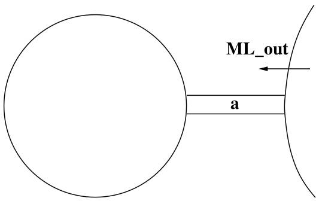

Développement de systèmes critiques
avec la méthode Event-B
Modélisation, Raffinement et Preuve
3A cursus ingénieurs - Mention Sciences du Logiciel
CentraleSupelec - Université Paris-Saclay - 2024/2025
CentraleSupelec - Université Paris-Saclay - 2024/2025

Our Refinement Strategy
- Initial model $\to$ Limiting the number of cars (FUN-2)
- First refinement $\to$ Introducing the one way bridge (FUN-3)
- Second refinement $\to$ Introducing the traffic lights (EQP-1,2,3)
- Third refinement $\to$ Introducing the sensors (EQP-4,5)
Reminder of the physical system

First Refinement
Introducing a One-Way Bridge
- We go down with our parachute
- Our view of the system gets more accurate
- We introduce the bridge and separate it from the island
- We refine the state and the events
- We also add two new events $\to$
IL_in andIL_out - We are focusing on FUN-3 $\to$ one-way bridge
First Refinement
Introducing a One-Way Bridge


Introducing Three New Variables

$a$ denotes the number of cars on bridge going to island$b$ denotes the number of cars on island$c$ denotes the number of cars on bridge going to mainland$a$ ,$b$ , and$c$ are the concrete variables- They replace the abstract variable
$n$
Refining the State
- Variables
$a$ ,$b$ , and$c$ denote natural numbersVARIABLES $a$ $b$ $c$ INVARIANTS inv1_1: $a \in \mathbb N$ inv1_2: $b \in \mathbb N$ inv1_3: $c \in \mathbb N$
Refining the State
Introducing New Invariants
- Relating the concrete state (
$a$ ,$b$ ,$c$ ) to the abstract state ($n$ )INVARIANTS ... inv1_4: $a + b + c = n$
- Formalizing the new invariant $\to$ one way bridge (this is FUN-3)
INVARIANTS ... inv1_5: $a = 0 \lor c = 0$
- Invariants
inv1_1 toinv1_5 are called the concrete invariants inv1_4 glues the abstract state,$n$ , to the concrete state,$a$ ,$b$ ,$c$
Proposal for Refining Event ML_out

ML_out $\mathrel{\widehat=}$
when
grd1_1: $a + b < d$
grd1_2: $c = 0$
then
act1_1: $a := a + 1$
end
Proposal for Refining Event ML_in

ML_in $\mathrel{\widehat=}$
when
grd1_1: $0 < c$
then
act1_1: $c := c - 1$
end